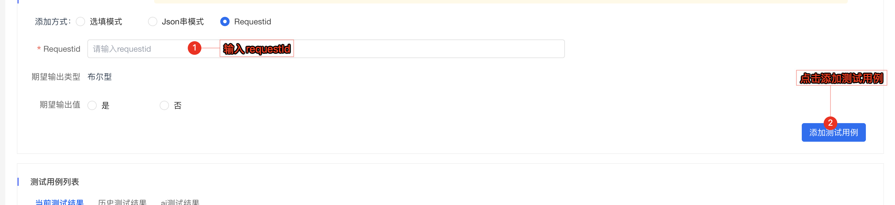
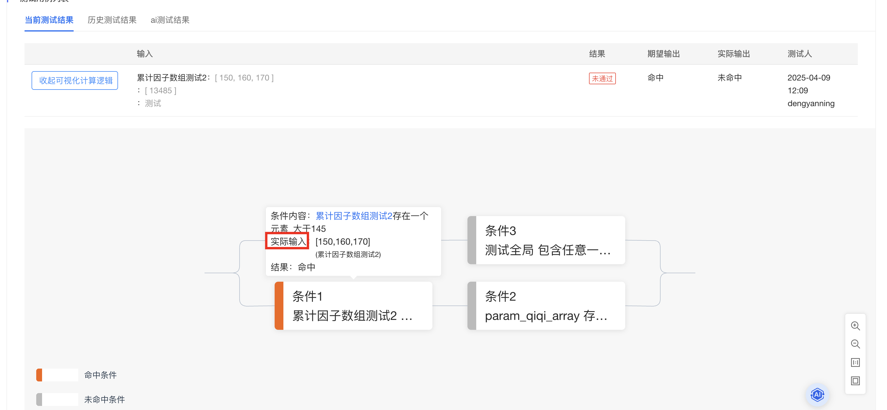
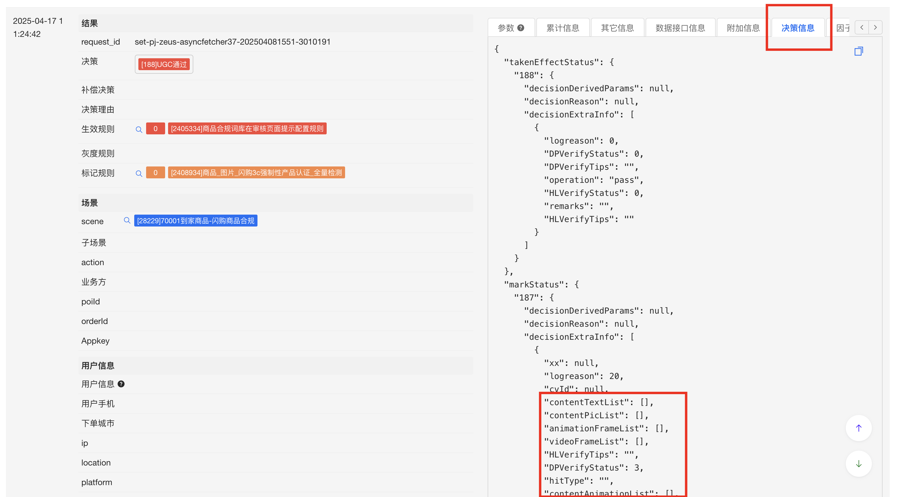

QA
Q：规则命中不符合预期如何排查？为什么我的规则没有命中
A：可以在规则测试中，将不符合预期的请求id输入后点击添加测试用例

可以在可视化测试结果电路图中查看具体哪个环节规则执行不符合预期，鼠标悬停在组件上时可以查看规则条件是否命中，以及当前条件的特征实际值是多少。
Q：熔断配置链接？
A：https://zeus.sankuai.com/data_zeus_static/#/rulesFuseList
Q：为什么多模规则命中，但是决策为通过？
A：如果附加信息配置了有序识别，可能是因为多模规则命中，但是不符合有序识别结果，打标失败导致。可以根据日志中决策信息查看，是否对应的图list，动图list，文list等均为空数组，如果是，那么是不符合有序识别结果导致打标失败，请确认送审图文具体哪一个应该被打标，对应规则中特征list的位置是否有值。
